gatool is a tool to provide FIRST Game Announcers with up to date information while announcing events during the FIRST Robotics season. As a web-based tool, it uses up-to-date information about the event to provide a comprehensive set of useful data to Game Announcers. It is designed to work on desktops, laptops and tablet devices. In a pinch, it can be used on a mobile phone.
gatool is available as a web site. You will need a login to access the tool. All registered GAs and MCs will receive an invitation with a login and password.
If you are disinclined to read the documentation contained in this site, we've made a short video so you can see it in action.
In Safari, you can save gatool to your home screen. In the address bar, tap the Share button and choose Add to Home Screen.
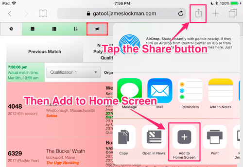
This will add an icon on your iPad's home screen, and gatool will now behave like an app. The icon will be whatever you have on the screen at the time you Add to Home Screen, so you might want to have the Play by Play or Cheat Sheet screen open when you save.
In other browsers, use their native Full Screen modes.
gatool is organized in tabs. Each tab provides focused information to the user to help with specific aspects of a competition. The basic flow is:
The ultimate goal of the gatool is to reduce paper and empower Game Announcers with more relevant and more up-to-date match data.
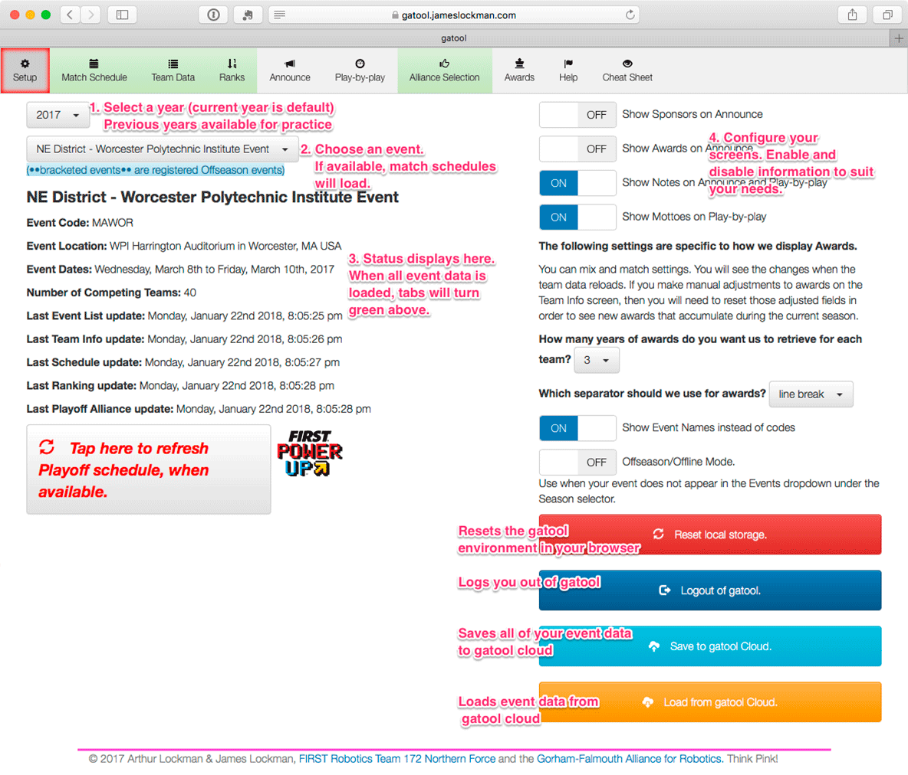
The Setup tab is where you select your event. Choose a year, then the event. On a laptop or desktop, you will have a search filter for the events. On tablets and mobile devices, you will need to scroll to find your event.
The screen will display status information about the data that are available for the event. These data are read directly from FIRST, and they are updated throughout the competition by the Field Management System. As the event progresses, more data will be available and the status indicators will change.
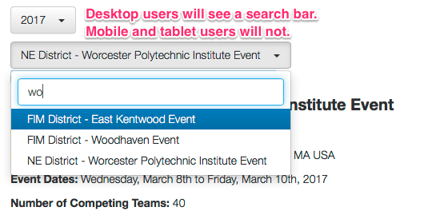
While event data load, you will see a pink progress bar below the event selector. It will disappear when team data have loaded. When a match schedule for the event is available, the Match Schedule tab will turn green. This is your clue that the match schedule is loaded and you are ready to go to work. Ranks will turn green once rank data becomes available, and Alliance Selection will turn green once Qualification matches complete.
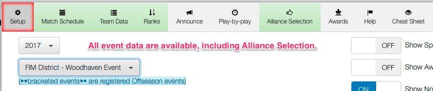
Once you complete Alliance Selection, return to this page to load the Playoff schedule by tapping or clicking "Tap here to refresh Playoff Schedule, when available." Playoff schedule changes (as a result of match play and advancement criteria during Playoff stages) will load automatically as the competition progresses.
At the bottom of the screen, there are four buttons.
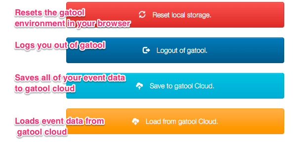
The Match Schedule tab displays the match schedule data. This is up-to-date data from FIRST. You can always re-load the schedule from the Setup page. The Match Schedule is read only, and it will exapnd to include Playoff matches once they become available. The Match Schedule also shows match results as they become available. It also shows predicted and actual match times to help you understand how close to on schedule your event is running.
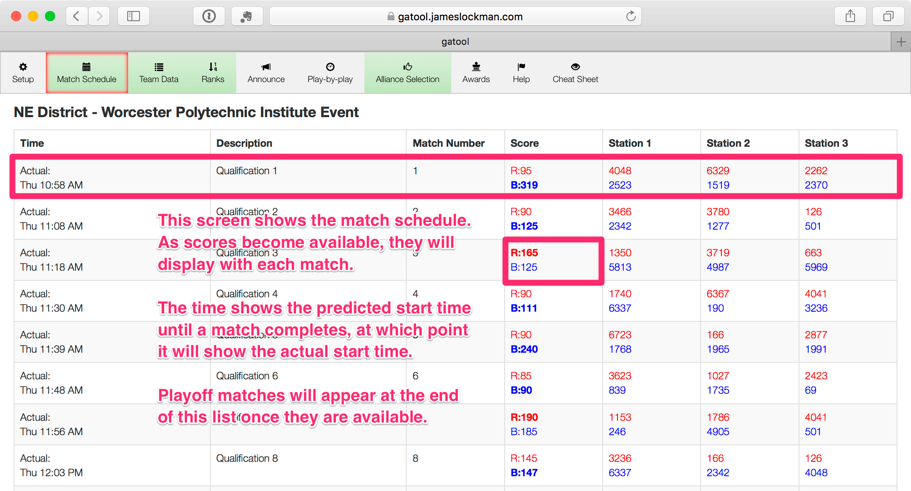
The Team Data tab displays information about the teams that are registered for the event. The table displays the current data from FIRST, but it allows you to modify what you see in the Announce and Play-by-play screens.
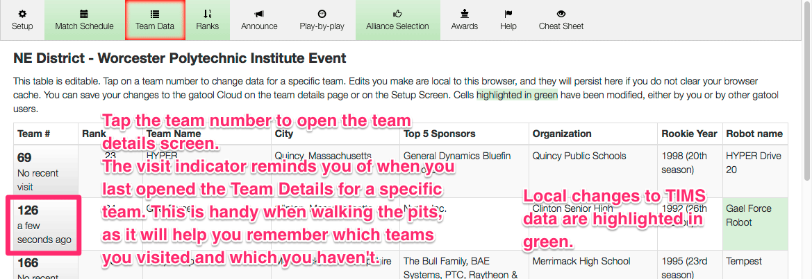
Tap on a team number to open its details page. Edit any of the data in the form and tap Done to save the changes. These changes will appear in the Team Data, Announce and Play-by-play screens. Like Rush says, these changes aren't permanent, so if you want to revert any change to the FIRST data, simple clear the field in the details page and tap Done. If you want to erase ALL changes and revert to the data supplied by FIRST, reset the local storage from the Setup Screen.
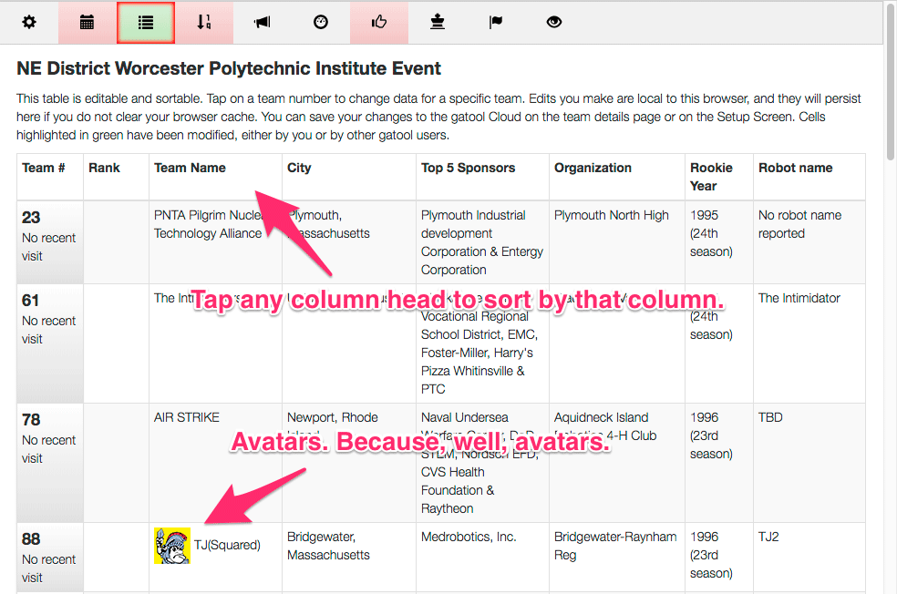
When you make changes to a team's data, gatool records that as a "visit" to the team. Last visit times appear under the team number. This can be very helpful as you work the pits. Note that if you exit a Team Details page without tapping Done, no changes will be recorded. You can reset all visit times by tapping on the Reset all visit times button at the bottom of the table.
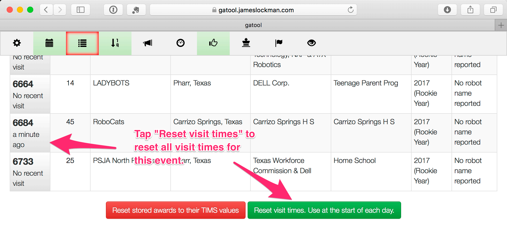
The Team Table is sortable. Tap on any column head to sort by that column. Once sorted, tapping again will reverse the sort order of that column.
It is a best practice not to adjust the Awards field for a specific team. If you do, new Awards will not accrue to the teams whose Awards you edit. Instead, use the Awards controls on the Setup page. You can clear out all of the changes you have made to Awards, leaving all other changes intact, by tapping on the Reset stored awards button at the bottom of the Team Data screen.
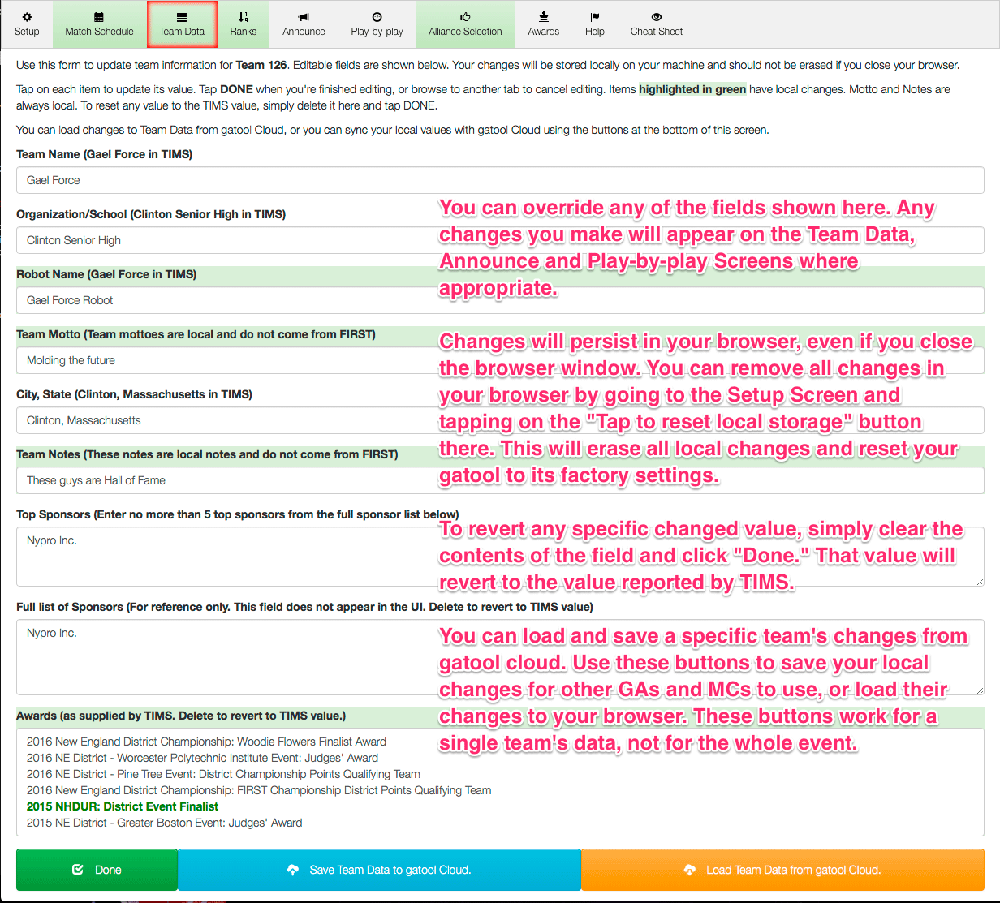
Any updated information is stored in the browser's local storage, so it should persist even if you close the browser or switch events. You can load crowd sourced team data by tapping on the Load Event Data from the gatool Cloud button on the Setup Screen.
If you are a GA or MC at an event, please confer with your GA or MC partner, update your local team data, and then save it to the gatool Cloud. You can save to the gatool Cloud by tapping Save Event Data to the gatool Cloud on the Setup Screen. Once you have saved, you can load the data on another device so that all of your devices are synced. We ask that only the on-site GA or MC save to gatool cloud during an event.
Once you have interviewed the teams and have updated their robot names and sponsors (and other items, of course!) in your gatool, you are ready to announce. There are two screens for match announcing: Announce and Play-by-play.
The Announce Screen is organized to make it easy for you and your emcee to announce the teams before a match. The screen presents the teams in announce order, so you should be able to read from top to bottom. The current match is indicated at the top and bottom of the screen. Also, there are buttons to cycle through the matches. You can use these buttons to preview upcoming matches or to review previous matches. Each time you tap the Next Match or Previous Match buttons, a call is made to retrieve current ranking data. It is best to retrieve current ranking data right before your current match to fetch the latest results from FIRST.
The Announce screen includes a lot of information about the teams, including:
Ranking is color coded to help build excitement. The number 1 alliance is highlighted in gold. Numbers 2 through 8 are highlighted in green. Numbers 9 and 10 are highlighted in yellow.
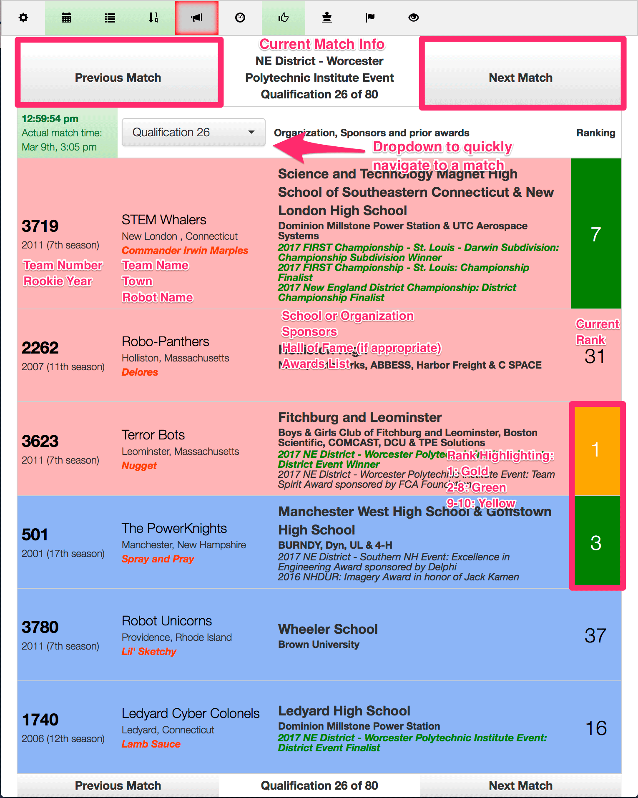
During the Playoffs, you might need to substitute or rearrange teams in their stations. To replace a team, simply tap on a team number. Enter the replacement team number and tap Make it so. The Announce and Play-by-play screens will now show data for the replacement team. The update will not affect other gatool users, nor will it update FMS. FMS will publish the match results with the substitutions after the match completes.
You will not be allowed to substitute a team that does not appear in the event.
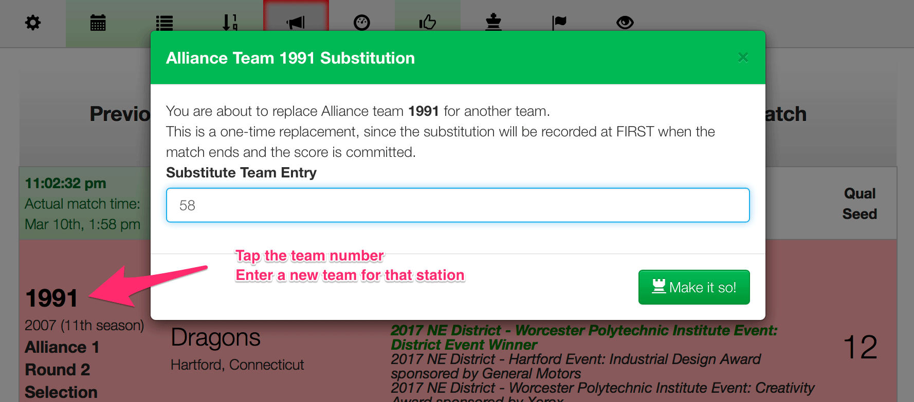
The Play-by-play screen is organized to make it easy for you to provide colorful and relevant commentary during a match. The screen presents the teams from the perspective of the scoring table, with Blue Alliance on the left and Red Alliance on the right. The current match is indicated at the top of the screen. The tournament high score to date is indicated at the bottom of the screen. Note: The high score indicator is also a button that refreshes the current standings.
At the top and bottom of the screen, there are buttons to cycle through the matches. You can use these buttons to preview upcoming matches or to review previous matches. Each time you tap the Next Match or Previous Match buttons, a call is made to retrieve current ranking data. It is best to refresh current match data right before your current match to ensure that you have the the latest results from FMS.
The Announce screen includes a reduced set of information about the teams, including:
Ranking is color coded to help build excitement and it follows the scheme from the Announce screen.
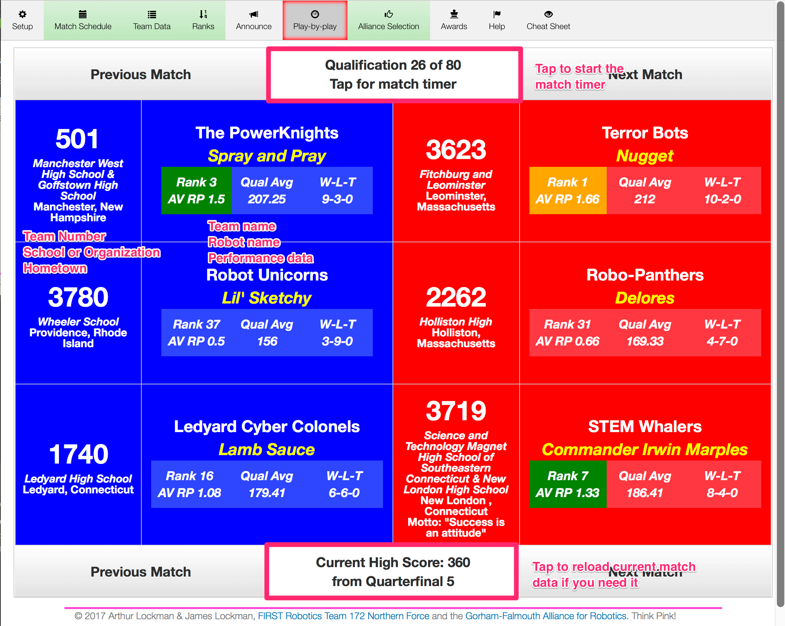
At the top center of the screen, there is a match timer. This is a handy tool to help you identify the time remaining in the match and what phase of the match is currently active. Tap it once to start the timer, and tap it at any time to reset the timer. The phases of the timer include:
Autonomous. During the Autonomous period, the timer is orange and counts down to the end of Autonomous period.
Teleoperated. During the Teleoperated period, the timer is green and counts down to the Endgame, which begins when 30 seconds remain in the match.
Endgame. During the Endgame, the timer is red. When 10 seconds remain in the match, it will cycle alternatingly red and white until time expires.
During the Playoffs, you might need to substitute or rearrange teams in their stations. To replace a team, simply tap on a team number. Enter the replacement team number and tap Make it so. The Announce and Play-by-play screens will now show data for the replacement team. The update will not affect other gatool users, nor will it update FMS. FMS will publish the match results with the substitutions after the match completes.
You will not be allowed to substitute a team that does not appear in the event.
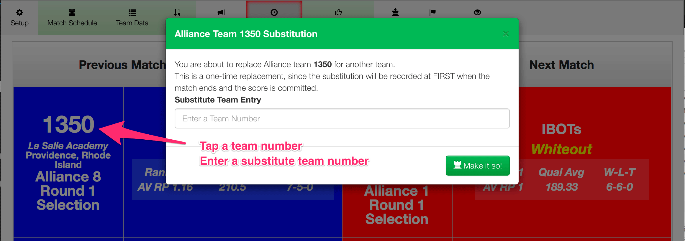
The Alliance Selection Screen is designed to help you and your emcee inform and entertain during Alliance Selection. Often the most confusing part of any FIRST event, Alliance Selection is a critical component of the FIRST competition philosophy. In many venues, there is no clear view of the scoring screen, which can help teams make selection choices. Also, it is difficult for a Game Announcer to search through a long list of teams in order to call out their names, schools and home towns after their number is called by the Alliance Captain.
The Alliance Selection Screen uses a "tap on the team" interface to help ease the stress of Alliance Selection, and it is intended to be used by both emcees and Game Announcers. To ensure that you have the latest ranking data, tap on the high score on the Play-by-play Screen or by cycle backward and forward on the Announce or Play-by-play Screens.
All team numbers on the screen are active, so that when you tap them, you will have options based on whether the team is available for selection. As teams accept their invitations, the screen will adjust to reflect the decisions. If you make a mistake, you can always undo the choice.
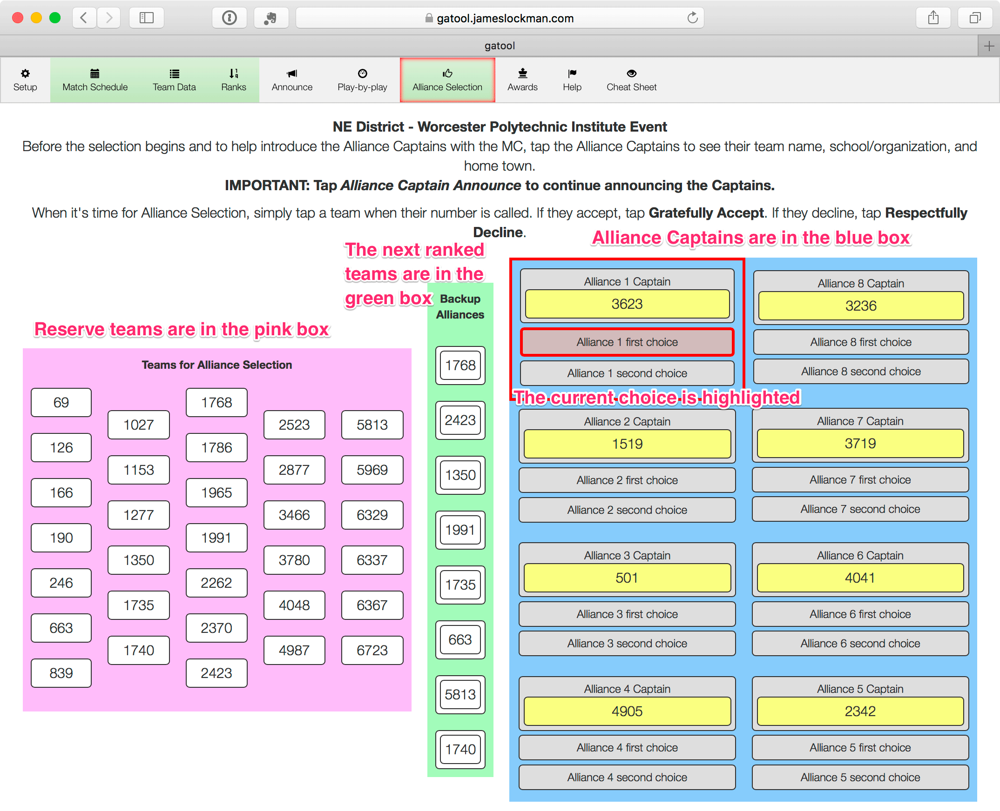
Alliance Captains are organized according to the ranking at the completion of Qualification play, and the Alliance Captains are pre-populated in their Alliances. The Alliances are on the right hand side of the screen. The current Alliance pick is also highlighted with a red border. Before Alliance Selection begins, it is customary to introduce the Alliance Captains. Tap on their team number to reveal their team particulars, then choose Alliance Captain Announce to dismiss the dialog.
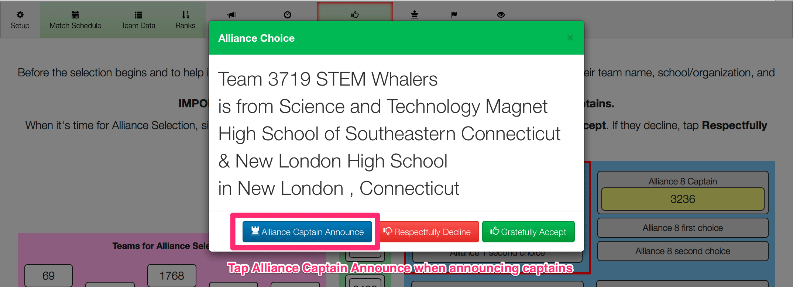
To make a selection, tap on a team number. A modal dialog will appear that displays the team number, name, hometown and organization. This is to help the Game Announcer provide details about the team as they come onto the field to accept of decline the offer to join the Alliance. If the accept the offer, tap Gratefully Accept. If they decline the offer, tap Respectfully Decline.
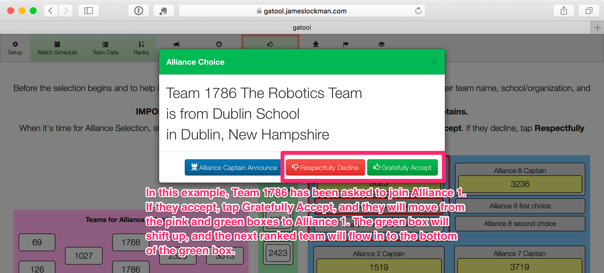
When a team accepts an offer, the folowing actions occur: they will be committed to the highlighted Alliance position, the team will be removed from the list of available teams, and the highlighted Alliance choice will advance to the next choice. If the invited team is in the top 8 of the remaining teams, they will move out of the green and pink boxes and move to the Alliance box. If they decline the offer, then select another team. If you make a mistake, you can undo the choice, all the way back to the beginning.
Alliance Captains who have not yet chosen their first Alliance partner are also eligible for Alliance selection. If you tap an Alliance Captain, announce their particulars and choose Gratefully Accept or Respectfully Decline. If they accept, their team will move to the highlighted Alliance choice, and all of the Captains below their rank will advance one slot. In addition, a new number 8 Captain will come out of the available alliance pool according to the qualification rankings. A new team will flow into the bottom of the green box, according to the qualification rankings.
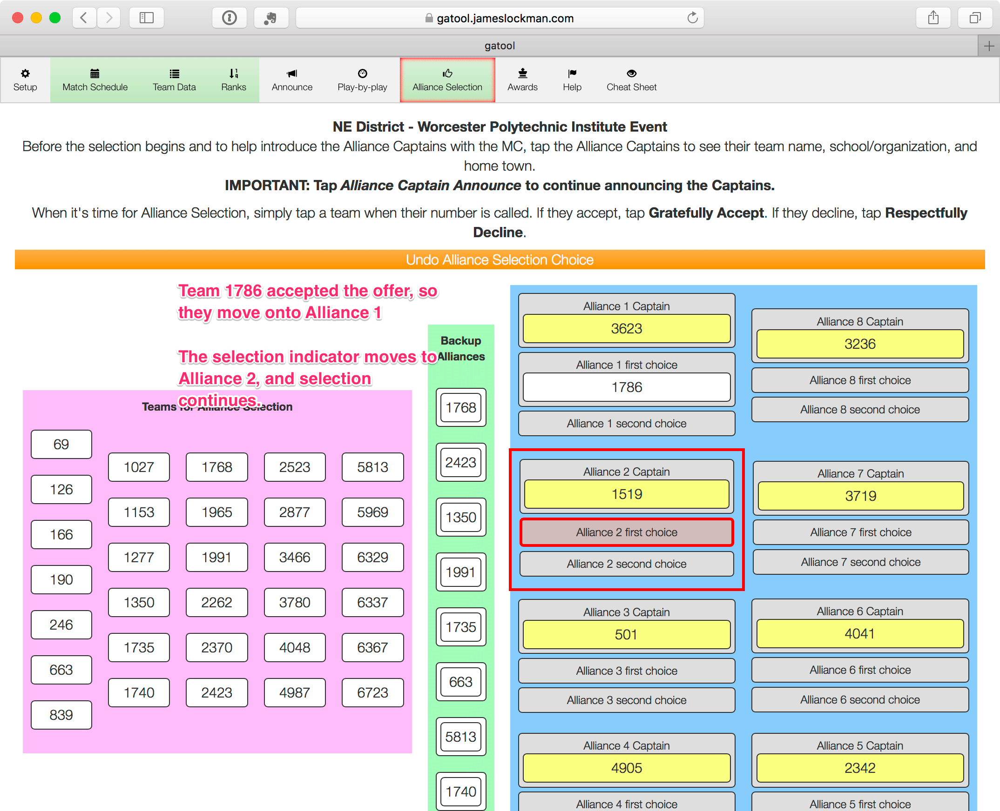
There is a special Championship case, in which Alliances contain 4 teams and there are no reserves. gatool understands this situation and will display a third choice for each Alliance. Since there are no backups in this situation, there is no Backup Alliance box in Championship Alliance Selection.
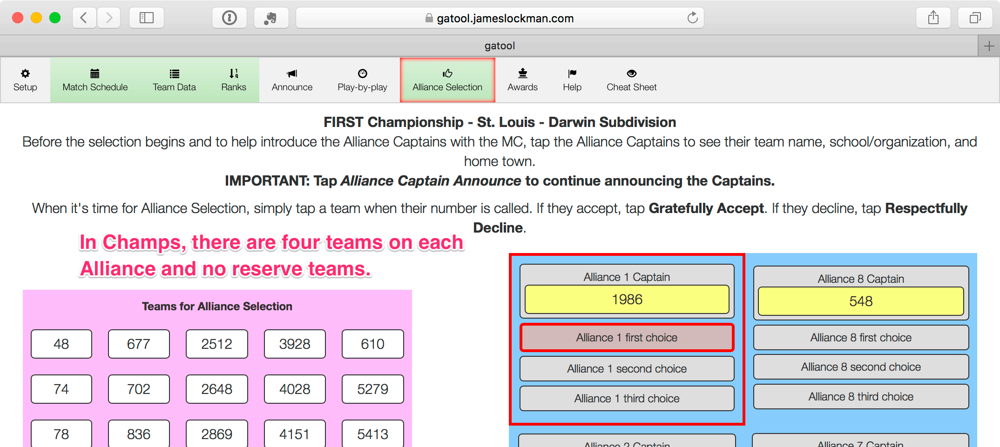
We have designed the Alliance Selection screen with simplicity and utility in mind. We hope that Emcees, Game Announcers and event coordinators will find it useful.
The Awards Screen makes it easy to announce details about award winners during a competition. When you tap on a team number, a modal dialog will display the Team details. Announce the team then tap Congratulations! The teams remain in the list, so teams who receive multiple awards can be announced.
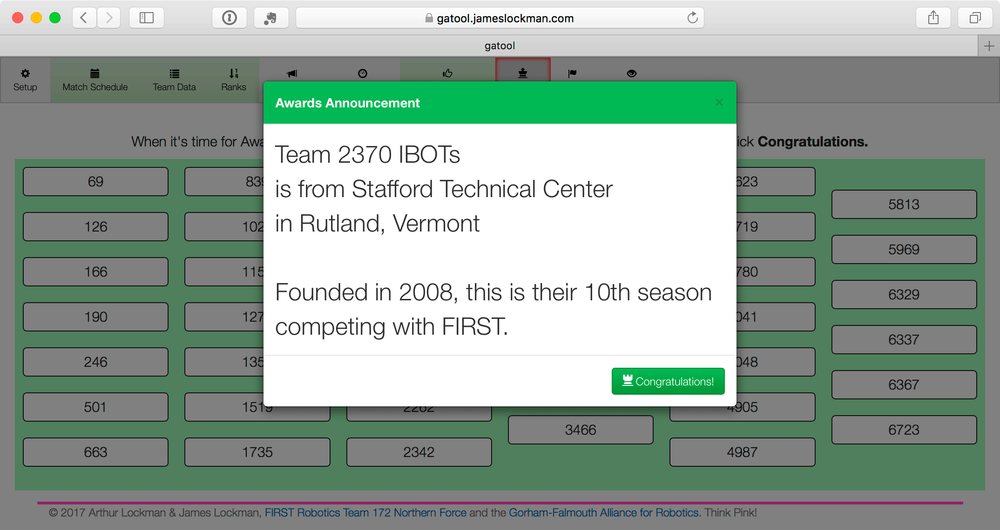
Andy Smith from Team 5546 has prepared a great Cheat Sheet that summarized scoring, field elements and game play. We've included it here as a resource, but we've turned it so that it aligns with the Scoring Table. If you are working from the Scoring Table, then the Cheat Sheet will match your view of the Playing Field.
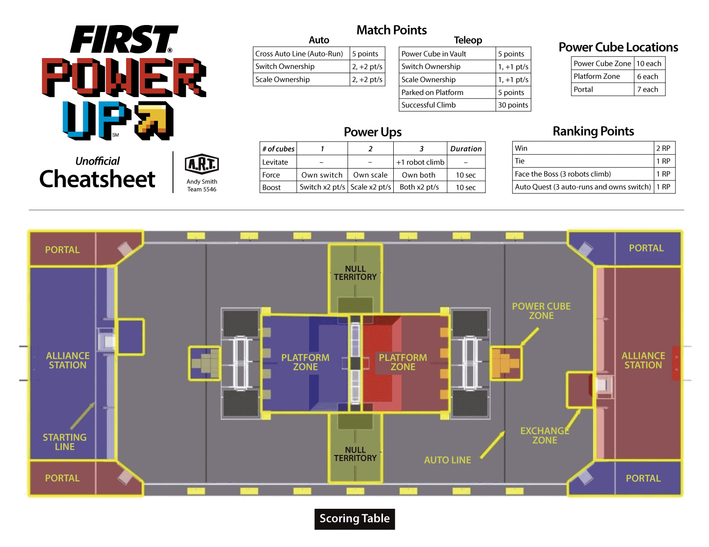